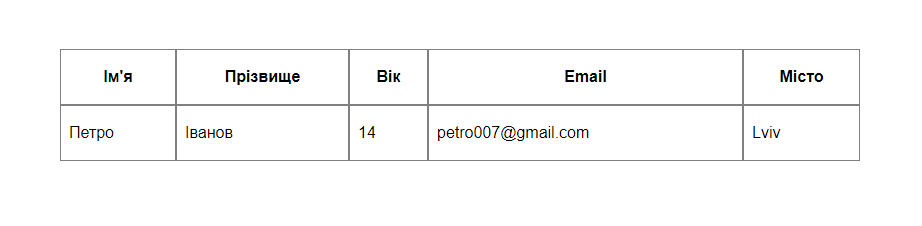
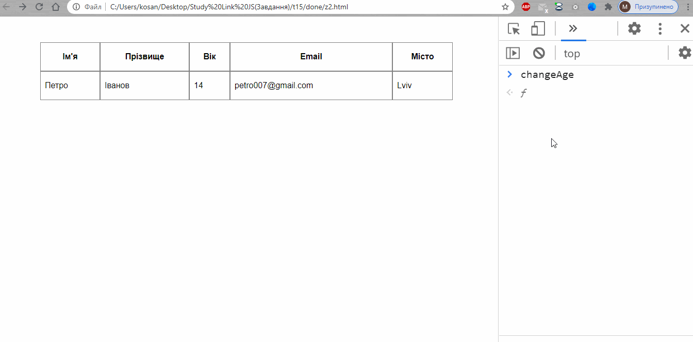
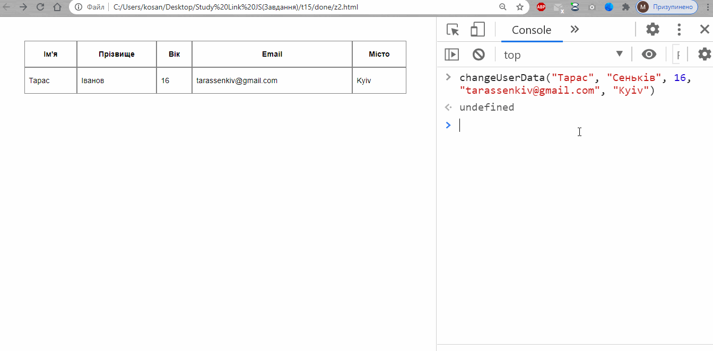

Тема 15. Завдання 2
1. Створіть об'єкт user. Присвойте цьому об'єкту поля для: iм'я, прізвища, віку, еmail, міста проживання.
2. Створіть функцію showUser() яка буде виводити таблицю з цими полями на вашу веб-сторінку. Використайте ці стилі для таблиці.

3. Створіть функції changeName(), changeLastName(), changeAge(), changeEmail(), changeCity() які приймають один агрумент і замінюють відповідні поля у об'єкті user. Після зміни опля у об'єкті user викликайте функцію showUser() та та відображайте нові данні користувача. ( Викликайте ці функції у консолі )

4. Створіть функцію changeUserData() яка приймає 5 агрументів які замінюють відповідні поля у об'єкті user. Після зміни оплів у об'єкті user викликайте функцію showUser() та та відображайте нові данні користувача. ( Викликайте ці функції у консолі )
